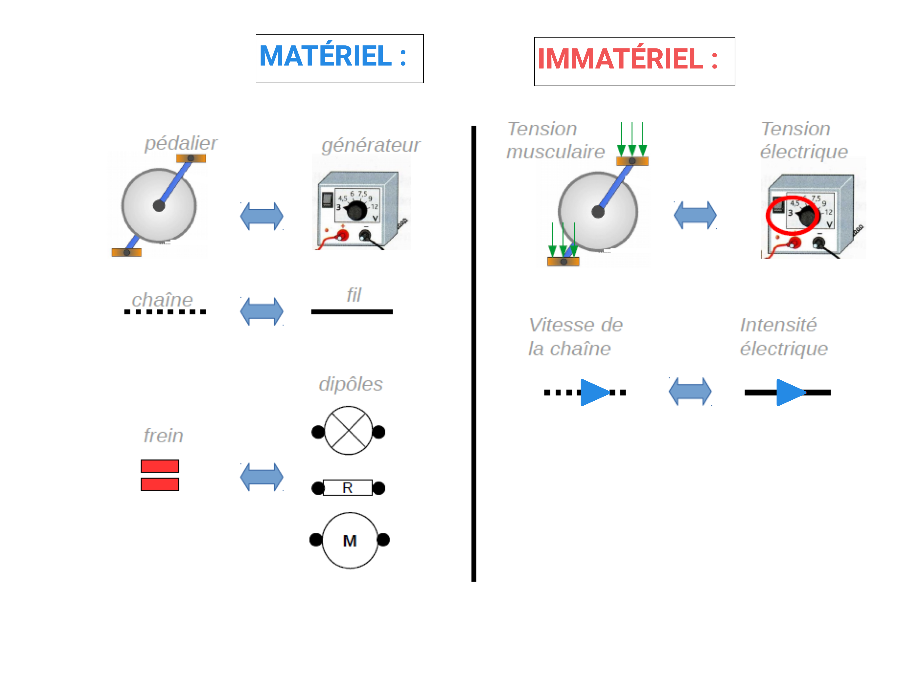

PRÉSENTATION DES ÉLÉMENTS :
on compare chacun des éléments du circuit électrique à des éléments d'une chaine de vélo.
MODE D'EMPLOI :

Généralement, on part du circuit (qui est une situation compliquée) pour le transformer à l'aide des éléments MATÉRIELS de l'analogie (étape 1). Puis, on réfléchit à l'aide de l'analogie de la chaîne de vélo (plus simple !!!) en utilisant les éléments IMMATÉRIELS (étape 2). Enfin, on revient vers le circuit où on reporte ce que l'on a compris à l'aide de l'analogie de la chaîne de vélo (étape 3)!